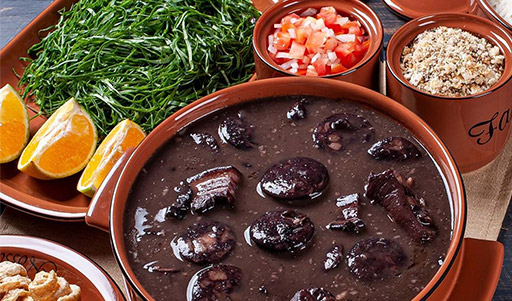
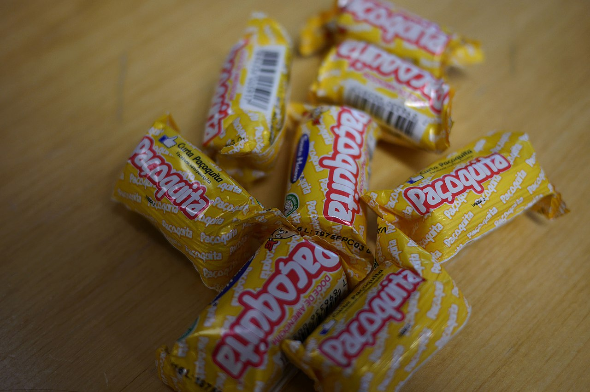

A culinária do Brasil é fruto de uma mistura de ingredientes europeus, indígenas e africanos. Muitos dos componentes das receitas e técnicas de preparo são de origem indígena, tendo sofrido modificações por parte dos portugueses e dos escravos oriundos da África. Esses faziam adaptações dos seus pratos típicos substituindo os ingredientes que faltassem por correspondentes locais. A feijoada à brasileira, prato típico do país, é um exemplo disso.
PAÇOCA é típica da culinária caipira brasileira e mais presente no interior dos estados de São Paulo e Minas Gerais
A paçoca em sua forma atual foi inventada durante o período do Brasil Colonial, mas os povos nativos brasileiros tinham receitas que misturavam farinha de mandioca com outros ingredientes antes da colonização. Essas receitas foram modificadas pelos colonos, criando a combinação atual que utiliza açúcar.
